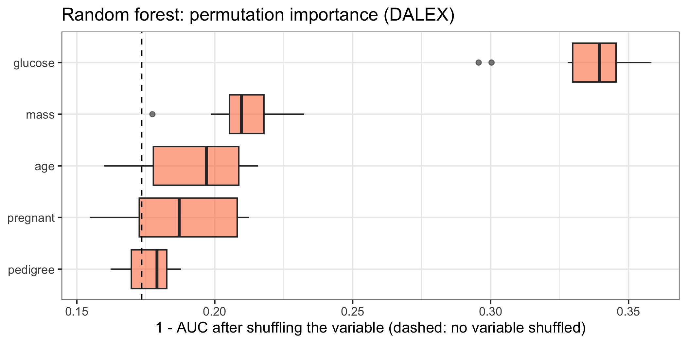
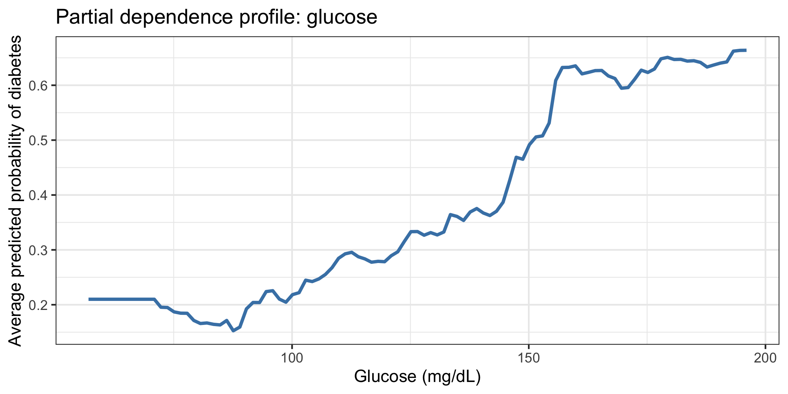
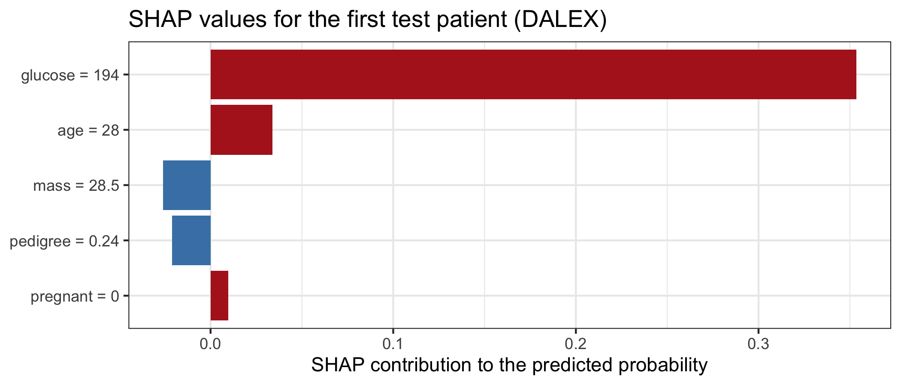
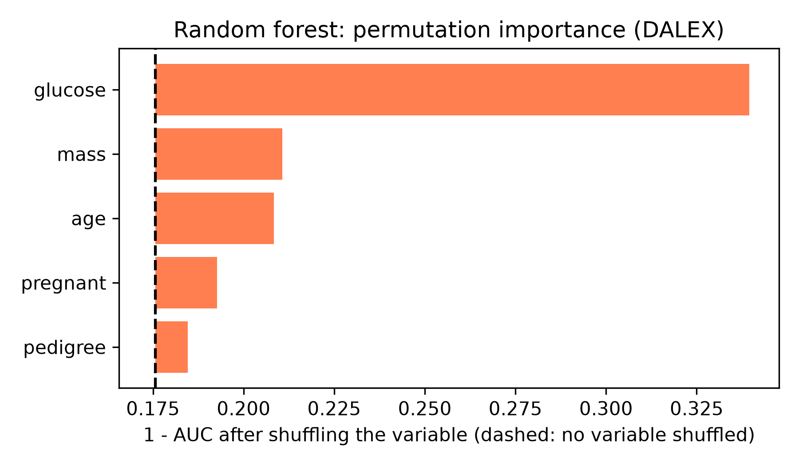
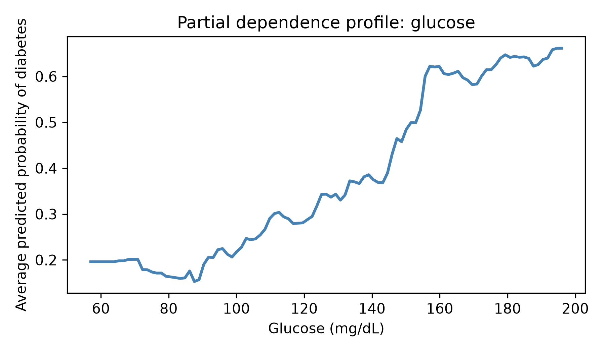
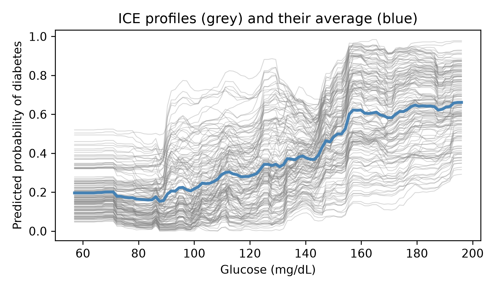
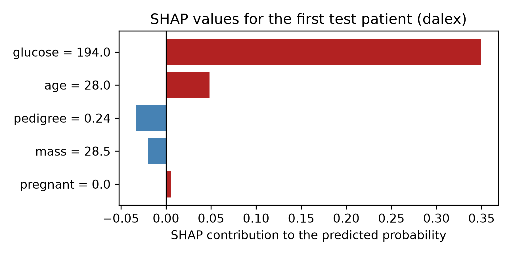

# Packages for this exercise. If one is missing, remove the # and run this line once:
# install.packages(c("tidyverse", "tidymodels", "DALEX", "DALEXtra", "ranger"))
library(tidyverse)
library(tidymodels)
library(DALEX) # explanations for any model
library(DALEXtra) # connects DALEX to tidymodels
theme_set(theme_bw()) # white background for every plot
options(pillar.sigfig = 3) # show three significant figures in tablesExercise 9.3 — One toolbox for explanations: DALEX
Exercises 9.1 and 9.2 used a different package for each explanation. The DALEX package collects these methods, and more, behind one interface: you wrap the fitted model once in an explainer, then ask the explainer for whatever you want to know. The same package exists in R (with DALEXtra for tidymodels) and in Python (dalex), with the same function names.
Theory: the explainer object; model performance; permutation importance with a loss function; partial dependence and individual conditional expectation (ceteris-paribus) profiles; break-down and SHAP explanations of one prediction.
NoteThe plots are for looking at
The code for every plot is folded away just above it, in case you are curious, and all of it is in the code file linked at the top of each tab. You are not expected to write it yourself.
Download the R code from this chapter — every cell below, in page order, including the code for every plot, with the blanks left for you to fill in. Open it in Positron beside the page and run it a chunk at a time.
Packages and data
Part 1 — The model and the explainer
The black box is the random forest of Exercises 9.1 and 9.2: the same data (data/diabetes.csv), split and five predictors. The predictors stay in their own units. A forest splits on one variable at a time, so it does not need them scaled, and the plots below are easier to read in mg/dL and years than in standard deviations.
diabetes <- read_csv("data/diabetes.csv") |>
select(pregnant, glucose, mass, pedigree, age, diabetes) |>
filter(glucose > 0, mass > 0) |> # remove the impossible zeros
mutate(diabetes = factor(diabetes, levels = c("neg", "pos")))
test_rows <- seq(1, nrow(diabetes), by = 5) # every fifth person is held back
train <- diabetes[-test_rows, ]
test <- diabetes[test_rows, ]
set.seed(1)
rf_fit <- rand_forest(trees = 500) |>
set_engine("ranger", importance = "impurity") |>
set_mode("classification") |>
fit(diabetes ~ ., data = train)Evaluate it on the test set, with the predicted classes (threshold 0.5):
test_preds <- predict(rf_fit, new_data = test, type = "prob") |>
bind_cols(predict(rf_fit, new_data = test)) |> # adds .pred_class
bind_cols(test)
test_preds |>
metrics(truth = diabetes, estimate = .pred_class)#> # A tibble: 2 × 3
#> .metric .estimator .estimate
#> <chr> <chr> <dbl>
#> 1 accuracy binary 0.767
#> 2 kap binary 0.459Accuracy 0.767 and Cohen’s kappa 0.459 (kappa is accuracy corrected for the agreement expected by chance). The Python forest is grown from different random numbers and gets 0.760 and 0.451.
Now wrap the model in an explainer. explain_tidymodels() needs the model, the predictors of the data to explain it on (the 150 test patients), and the true outcome y as numbers, 1 for diabetes and 0 for none. Give the explainer a label; it appears on every result.
# Replace every ______ below, then run this cell.
explainer <- explain_tidymodels(
rf_fit,
data = test |> select(-diabetes),
y = as.numeric(test$diabetes == ______), # 1 = diabetes, 0 = none
label = "Random forest",
verbose = FALSE # no progress report
)
TipStuck?
y must be 1 for the people with diabetes. Which level of diabetes is that? Note that as.numeric(test$diabetes) on its own would give 1 and 2 (the positions of the levels), and the explainer would then compare probabilities with the wrong numbers.
Ask the explainer how well the model performs:
performance <- model_performance(explainer)
performance$measures |> as_tibble()#> # A tibble: 1 × 5
#> recall precision f1 accuracy auc
#> <dbl> <dbl> <dbl> <dbl> <dbl>
#> 1 0.547 0.725 0.624 0.767 0.826The AUC, 0.826, is the same as roc_auc() gives: a quick check that the explainer is using the probability of pos. Recall, precision, F1 and accuracy use a threshold of 0.5.
ImportantLearning points
- An explainer wraps a fitted model with the data to explain it on and the true outcome; every explanation is then one function call.
- The outcome must be numeric, 1 for the event and 0 otherwise; check the explainer’s report and the AUC before going on.
Part 2 — Global: which variables matter?
model_parts() computes the permutation importance of Exercise 9.1: shuffle one variable, measure how much worse the model gets, repeat (10 times by default) and average. DALEX measures “worse” with a loss, which by default for a classifier is \(1 - \text{AUC}\), so a larger loss is a worse model. Two reference rows come with the result: _full_model_, the loss with nothing shuffled, and _baseline_, the loss when every variable is shuffled at once (a model that knows nothing, AUC about 0.5).
set.seed(1)
importance_dalex <- model_parts(explainer)
importance_dalex |>
as_tibble() |>
filter(permutation == 0) |> # permutation 0 is the average over the 10 shuffles
select(variable, dropout_loss)#> # A tibble: 7 × 2
#> variable dropout_loss
#> <chr> <dbl>
#> 1 _full_model_ 0.174
#> 2 pedigree 0.176
#> 3 pregnant 0.188
#> 4 age 0.193
#> 5 mass 0.210
#> 6 glucose 0.334
#> 7 _baseline_ 0.505Code for this plot (optional)
full_loss <- importance_dalex |>
as_tibble() |>
filter(variable == "_full_model_", permutation == 0) |>
pull(dropout_loss)
importance_dalex |>
as_tibble() |>
filter(permutation > 0, !variable %in% c("_full_model_", "_baseline_")) |>
ggplot(aes(x = dropout_loss, y = reorder(variable, dropout_loss))) +
geom_boxplot(fill = "coral", alpha = 0.6) +
geom_vline(xintercept = full_loss, linetype = "dashed") +
labs(x = "1 - AUC after shuffling the variable (dashed: no variable shuffled)",
y = NULL, title = "Random forest: permutation importance (DALEX)")
Code for this plot (optional)
# DALEX's own plot gives the same picture: plot(importance_dalex)The full model has a loss of 0.174 (an AUC of 0.826). Shuffling glucose raises it to 0.334; shuffling any other variable raises it by between 0.002 (pedigree) and 0.036 (BMI). This is the ranking of Exercise 9.1, Part 3, reached with one line of code.
ImportantLearning points
model_parts()is permutation importance; its loss for a classifier is 1 − AUC, so higher means the model got worse._full_model_and_baseline_frame the result: the loss with nothing shuffled, and with everything shuffled.
Part 3 — How does the prediction change with one variable?
An importance says how much a variable matters, not how. A partial dependence profile shows how: set glucose to 60 for every test patient, keeping everything else about them as it is, and average the predicted probabilities; then set it to 61, and so on, up to 199. The curve of these averages is what the model predicts, on average, at each glucose level.
One patient’s curve on its own (every other variable held at her values) is an individual conditional expectation (ICE) or ceteris-paribus profile (“all else being equal”). The partial dependence profile is the average of the 150 ICE profiles.
pdp_glucose <- model_profile(explainer, variables = "glucose", type = "partial",
N = NULL, # use all 150 patients
variable_splits_type = "uniform") # an evenly spaced grid
pdp_glucose$agr_profiles |>
as_tibble() |>
slice(seq(1, 101, by = 20)) # every 20th of the 101 grid points#> # A tibble: 6 × 5
#> `_vname_` `_label_` `_x_` `_yhat_` `_ids_`
#> <chr> <chr> <dbl> <dbl> <dbl>
#> 1 glucose Random forest 57 0.210 0
#> 2 glucose Random forest 84.8 0.163 0
#> 3 glucose Random forest 113. 0.296 0
#> 4 glucose Random forest 140. 0.367 0
#> 5 glucose Random forest 168. 0.612 0
#> 6 glucose Random forest 196 0.664 0Code for this plot (optional)
pdp_glucose$agr_profiles |>
ggplot(aes(x = `_x_`, y = `_yhat_`)) +
geom_line(colour = "steelblue", linewidth = 1) +
labs(x = "Glucose (mg/dL)", y = "Average predicted probability of diabetes",
title = "Partial dependence profile: glucose")
Code for this plot (optional)
# DALEX's own plot: plot(pdp_glucose)Up to a glucose of about 90 the curve stays between about 0.16 and 0.21. It then climbs, gradually up to about 140 and steeply between 140 and 160, to about 0.6, and stays between 0.6 and 0.66 above that. A logistic regression would have drawn a smooth S; the forest draws steps, because it is made of splits.
Now the ICE profiles behind the average. They are stored in cp_profiles:
Code for this plot (optional)
pdp_glucose$cp_profiles |>
as_tibble() |>
ggplot(aes(x = glucose, y = `_yhat_`, group = `_ids_`)) +
geom_line(colour = "grey60", alpha = 0.4) +
geom_line(data = pdp_glucose$agr_profiles,
aes(x = `_x_`, y = `_yhat_`, group = NULL),
colour = "steelblue", linewidth = 1.2) +
labs(x = "Glucose (mg/dL)", y = "Predicted probability of diabetes",
title = "ICE profiles (grey) and their average (blue)")
Code for this plot (optional)
# DALEX's own plot: plot(pdp_glucose, geom = "profiles")Question! Do all the grey curves have the same shape as the blue one? What would it mean if some went up steeply and others hardly moved?
They rise in roughly the same place but by very different amounts, and they start at different heights. Where ICE curves have different shapes, the effect of glucose depends on the patient’s other values: an interaction. The average curve hides that, which is why it is worth drawing both.
Your turn. Draw the partial dependence profiles for the pedigree function and for age. model_profile() takes several variables at once.
# Replace every ______ below, then run this cell.
pdp_more <- model_profile(explainer, variables = c(______, ______), type = "partial",
N = NULL, variable_splits_type = "uniform")
pdp_more$agr_profiles |>
ggplot(aes(x = `_x_`, y = `_yhat_`)) +
geom_line(colour = "steelblue", linewidth = 1) +
facet_wrap(~ `_vname_`, scales = "free_x") +
labs(x = NULL, y = "Average predicted probability of diabetes")
ImportantLearning points
- A partial dependence profile is the average prediction as one variable is moved through its range, everything else about each patient held fixed.
- ICE (ceteris-paribus) profiles are the individual curves behind that average; when their shapes differ, the variable interacts with others.
- A forest’s profiles are step-shaped, because the forest is made of splits.
Part 4 — One patient: break-down and SHAP
predict_parts() explains one prediction. Take the first test patient again, the 28-year-old with a glucose of 194 from Exercise 9.2.
new_observation <- test |>
slice(1) |>
select(-diabetes)
new_observation#> # A tibble: 1 × 5
#> pregnant glucose mass pedigree age
#> <dbl> <dbl> <dbl> <dbl> <dbl>
#> 1 0 194 28.5 0.24 28predict(explainer, new_observation) # her predicted probability#> pos
#> 0.6900643SHAP, as in Exercise 9.2. DALEX estimates the Shapley values by adding the variables in 25 random orders and averaging each variable’s contribution, with the 150 test patients as the background:
set.seed(1)
shap_patient <- predict_parts(explainer, new_observation = new_observation,
type = "shap", B = 25)
shap_patient |>
as_tibble() |>
filter(B == 0) |> # B = 0 holds the average over the 25 orders
select(variable, contribution) |>
arrange(desc(abs(contribution)))#> # A tibble: 5 × 2
#> variable contribution
#> <chr> <dbl>
#> 1 glucose = 194 0.354
#> 2 age = 28 0.0338
#> 3 mass = 28.5 -0.0260
#> 4 pedigree = 0.24 -0.0210
#> 5 pregnant = 0 0.00978Code for this plot (optional)
shap_patient |>
as_tibble() |>
filter(B == 0) |>
ggplot(aes(x = contribution, y = reorder(variable, abs(contribution)),
fill = contribution > 0)) +
geom_col(show.legend = FALSE) +
scale_fill_manual(values = c("steelblue", "firebrick")) +
labs(x = "SHAP contribution to the predicted probability", y = NULL,
title = "SHAP values for the first test patient (DALEX)")
Code for this plot (optional)
# DALEX's own plot, with boxplots over the 25 orders: plot(shap_patient)Glucose contributes +0.354, much as in Exercise 9.2 (+0.308 there). The numbers are not identical: the background is the test patients rather than 100 training rows, and 25 random orders give an estimate, not the exact value.
Break-down is the simplest way to share out a prediction: start from the average prediction (the intercept), add the variables one at a time in a fixed order, and record how much the average prediction moves at each step. SHAP is the average of break-downs over many orders.
# Replace every ______ below, then run this cell.
breakdown_patient <- predict_parts(explainer, new_observation = new_observation,
type = ______)
breakdown_patient |>
as_tibble() |>
select(variable, contribution, cumulative)
TipStuck?
The type is written as a string, with an underscore: look at the SHAP cell above and at ?predict_parts.
Question! In the break-down, which variable comes first, and why does the order matter? Would age get the same contribution if it were added first?
The contribution of a variable depends on what is already known when it is added: knowing that a patient is 28 means something different before and after you know her glucose is 194. Break-down picks one order; SHAP averages over many, which is why it is the safer summary when variables interact.
All of these explanations, and more, can be browsed together in an interactive dashboard:
# Optional, not run here: an interactive dashboard of everything above
# library(modelStudio)
# modelStudio(explainer)
ImportantLearning points
predict_parts()explains one prediction;type = "break_down"adds the variables in one order,type = "shap"averages over many orders.- When variables interact, a break-down depends on the order; SHAP removes that dependence by averaging.
- One explainer, four questions: how good is the model, which variables matter, how does the prediction change with a variable, and why did this patient get this prediction.
Download the Python code from this chapter — every cell below, in page order, including the code for every plot, with the blanks left for you to fill in. Open it in Positron beside the page and run it a cell at a time.
Packages and data
# Packages for this exercise. If one is missing, install it once from a terminal
# (in a Jupyter notebook, type %pip instead of pip):
# pip install pandas numpy matplotlib scikit-learn "dalex>=1.8"
import pandas as pd
import numpy as np
import matplotlib.pyplot as plt
import dalex as dx # explanations for any model
from sklearn.ensemble import RandomForestClassifier
from sklearn.metrics import accuracy_score, cohen_kappa_scorePart 1 — The model and the explainer
The black box is the random forest of Exercises 9.1 and 9.2: the same data (data/diabetes.csv), split and five predictors. The predictors stay in their own units. A forest splits on one variable at a time, so it does not need them scaled, and the plots below are easier to read in mg/dL and years than in standard deviations.
diabetes = pd.read_csv("data/diabetes.csv")
diabetes = diabetes[["pregnant", "glucose", "mass", "pedigree", "age", "diabetes"]]
diabetes = diabetes[(diabetes["glucose"] > 0) & (diabetes["mass"] > 0)] # remove the impossible zeros
diabetes = diabetes.reset_index(drop=True)
diabetes["diabetes"] = (diabetes["diabetes"] == "pos").astype(int) # 1 = pos, 0 = neg
is_test = diabetes.index % 5 == 0 # every fifth person is held back
train = diabetes[~is_test]
test = diabetes[is_test]
predictors = ["pregnant", "glucose", "mass", "pedigree", "age"]
rf = RandomForestClassifier(n_estimators=500, random_state=1)
rf = rf.fit(train[predictors], train["diabetes"])Evaluate it on the test set, with the predicted classes (threshold 0.5):
test_class = rf.predict(test[predictors]) # predicted class, threshold 0.5
print("accuracy:", round(accuracy_score(test["diabetes"], test_class), 3))#> accuracy: 0.76print("kappa: ", round(cohen_kappa_score(test["diabetes"], test_class), 3))#> kappa: 0.451Accuracy 0.760 and Cohen’s kappa 0.451 (kappa is accuracy corrected for the agreement expected by chance). The R forest is grown from different random numbers and gets 0.767 and 0.459.
Now wrap the model in an explainer. dx.Explainer() needs the model, the predictors of the data to explain it on (the 150 test patients), and the true outcome y as numbers, 1 for diabetes and 0 for none. Give the explainer a label; it appears on every result.
# Replace every ______ below, then run this cell.
explainer = dx.Explainer(
rf,
data=test[______],
y=test["diabetes"], # already 1 = diabetes, 0 = none
label="Random forest",
verbose=False, # no progress report
)
TipStuck?
data is the table of predictors only, without the outcome column: the same columns the forest was fitted on.
Ask the explainer how well the model performs:
performance = explainer.model_performance()
performance.result.round(3)#> recall precision f1 accuracy auc
#> Random forest 0.566 0.698 0.625 0.76 0.824The AUC, 0.824, is the same as roc_auc_score() gives on these probabilities: a quick check that the explainer is using the probability of diabetes. Recall, precision, F1 and accuracy use a threshold of 0.5.
ImportantLearning points
- An explainer wraps a fitted model with the data to explain it on and the true outcome; every explanation is then one function call.
- The outcome must be numeric, 1 for the event and 0 otherwise; check the explainer’s report and the AUC before going on.
Part 2 — Global: which variables matter?
model_parts() computes the permutation importance of Exercise 9.1: shuffle one variable, measure how much worse the model gets, repeat (10 times by default) and average. DALEX measures “worse” with a loss, which by default for a classifier is \(1 - \text{AUC}\), so a larger loss is a worse model. Two reference rows come with the result: _full_model_, the loss with nothing shuffled, and _baseline_, the loss when every variable is shuffled at once (a model that knows nothing, AUC about 0.5).
importance_dalex = explainer.model_parts(random_state=1)
importance_dalex.result[["variable", "dropout_loss"]].round(3)#> variable dropout_loss
#> 0 _full_model_ 0.176
#> 1 pedigree 0.185
#> 2 pregnant 0.193
#> 3 age 0.208
#> 4 mass 0.211
#> 5 glucose 0.340
#> 6 _baseline_ 0.506Code for this plot (optional)
result = importance_dalex.result
full_loss = result.loc[result["variable"] == "_full_model_", "dropout_loss"].iloc[0]
bars = result[~result["variable"].isin(["_full_model_", "_baseline_"])]
bars = bars.sort_values("dropout_loss")
fig, ax = plt.subplots(figsize=(6, 3.5))
ax.barh(bars["variable"], bars["dropout_loss"] - full_loss, left=full_loss, color="coral")
ax.axvline(full_loss, color="black", linestyle="--")
ax.set_xlim(left=full_loss - 0.01) # leave room to see the dashed line#> (0.1656467613304804, 0.3477193153083058)Code for this plot (optional)
ax.set_xlabel("1 - AUC after shuffling the variable (dashed: no variable shuffled)")
ax.set_title("Random forest: permutation importance (DALEX)")
fig.tight_layout()
plt.show()
Code for this plot (optional)
# dalex's own plot gives the same picture, as an interactive plotly figure:
# importance_dalex.plot()The full model has a loss of 0.176 (an AUC of 0.824). Shuffling glucose raises it to 0.340; shuffling any other variable raises it by between 0.009 (pedigree) and 0.035 (BMI). This is the ranking of Exercise 9.1, Part 3, reached with one line of code.
ImportantLearning points
model_parts()is permutation importance; its loss for a classifier is 1 − AUC, so higher means the model got worse._full_model_and_baseline_frame the result: the loss with nothing shuffled, and with everything shuffled.
Part 3 — How does the prediction change with one variable?
An importance says how much a variable matters, not how. A partial dependence profile shows how: set glucose to 60 for every test patient, keeping everything else about them as it is, and average the predicted probabilities; then set it to 61, and so on, up to 199. The curve of these averages is what the model predicts, on average, at each glucose level.
One patient’s curve on its own (every other variable held at her values) is an individual conditional expectation (ICE) or ceteris-paribus profile (“all else being equal”). The partial dependence profile is the average of the 150 ICE profiles.
pdp_glucose = explainer.model_profile(variables=["glucose"], type="partial",
verbose=False)
pdp_glucose.result.iloc[::20].round(3) # every 20th of the 101 grid points#> _vname_ _label_ _x_ _yhat_ _ids_
#> 0 glucose Random forest 57.0 0.196 0
#> 20 glucose Random forest 84.8 0.161 0
#> 40 glucose Random forest 112.6 0.304 0
#> 60 glucose Random forest 140.4 0.375 0
#> 80 glucose Random forest 168.2 0.592 0
#> 100 glucose Random forest 196.0 0.661 0Code for this plot (optional)
fig, ax = plt.subplots(figsize=(6, 3.5))
ax.plot(pdp_glucose.result["_x_"], pdp_glucose.result["_yhat_"], color="steelblue", linewidth=2)
ax.set_xlabel("Glucose (mg/dL)")
ax.set_ylabel("Average predicted probability of diabetes")
ax.set_title("Partial dependence profile: glucose")
fig.tight_layout()
plt.show()
Up to a glucose of about 90 the curve stays between about 0.16 and 0.20. It then climbs, gradually up to about 140 and steeply between 140 and 160, to about 0.6, and stays between 0.6 and 0.66 above that. A logistic regression would have drawn a smooth S; the forest draws steps, because it is made of splits.
Now the ICE profiles behind the average. They are stored in raw_profiles:
Code for this plot (optional)
ice = pdp_glucose.raw_profiles.result
fig, ax = plt.subplots(figsize=(6, 3.5))
for patient_id in ice["_ids_"].unique():
one = ice[ice["_ids_"] == patient_id]
ax.plot(one["glucose"], one["_yhat_"], color="grey", alpha=0.3, linewidth=0.7)
ax.plot(pdp_glucose.result["_x_"], pdp_glucose.result["_yhat_"], color="steelblue", linewidth=2.5)
ax.set_xlabel("Glucose (mg/dL)")
ax.set_ylabel("Predicted probability of diabetes")
ax.set_title("ICE profiles (grey) and their average (blue)")
fig.tight_layout()
plt.show()
Question! Do all the grey curves have the same shape as the blue one? What would it mean if some went up steeply and others hardly moved?
They rise in roughly the same place but by very different amounts, and they start at different heights. Where ICE curves have different shapes, the effect of glucose depends on the patient’s other values: an interaction. The average curve hides that, which is why it is worth drawing both.
Your turn. Draw the partial dependence profiles for the pedigree function and for age. model_profile() takes several variables at once.
# Replace every ______ below, then run this cell.
pdp_more = explainer.model_profile(variables=[______, ______], type="partial",
verbose=False)
fig, axes = plt.subplots(1, 2, figsize=(8, 3.5), sharey=True)
for ax, name in zip(axes, ["pedigree", "age"]):
one = pdp_more.result[pdp_more.result["_vname_"] == name]
ax.plot(one["_x_"], one["_yhat_"], color="steelblue", linewidth=2)
ax.set_xlabel(name)
axes[0].set_ylabel("Average predicted probability of diabetes")
fig.tight_layout()
plt.show()
ImportantLearning points
- A partial dependence profile is the average prediction as one variable is moved through its range, everything else about each patient held fixed.
- ICE (ceteris-paribus) profiles are the individual curves behind that average; when their shapes differ, the variable interacts with others.
- A forest’s profiles are step-shaped, because the forest is made of splits.
Part 4 — One patient: break-down and SHAP
predict_parts() explains one prediction. Take the first test patient again, the 28-year-old with a glucose of 194 from Exercise 9.2.
new_observation = test[predictors].iloc[[0]]
print(new_observation)#> pregnant glucose mass pedigree age
#> 0 0 194 28.5 0.24 28print(explainer.predict(new_observation)) # her predicted probability#> [0.688]SHAP, as in Exercise 9.2. DALEX estimates the Shapley values by adding the variables in 25 random orders and averaging each variable’s contribution, with the 150 test patients as the background:
shap_patient = explainer.predict_parts(new_observation, type="shap", B=25,
random_state=1)
shap_average = shap_patient.result[shap_patient.result["B"] == 0] # B = 0 holds the average over the 25 orders
shap_average = shap_average[["variable", "contribution"]]
shap_average.sort_values("contribution", key=abs, ascending=False).round(3)#> variable contribution
#> 0 glucose = 194.0 0.349
#> 1 age = 28.0 0.048
#> 2 pedigree = 0.24 -0.033
#> 3 mass = 28.5 -0.020
#> 4 pregnant = 0.0 0.006Code for this plot (optional)
ordered = shap_average.sort_values("contribution", key=abs)
colours = np.where(ordered["contribution"] > 0, "firebrick", "steelblue")
fig, ax = plt.subplots(figsize=(6, 3))
ax.barh(ordered["variable"], ordered["contribution"], color=colours)
ax.axvline(0, color="black", linewidth=0.8)
ax.set_xlabel("SHAP contribution to the predicted probability")
ax.set_title("SHAP values for the first test patient (dalex)")
fig.tight_layout()
plt.show()
Glucose contributes +0.349, much as in Exercise 9.2 (+0.350 there). The numbers are not identical: the background is the test patients rather than the training rows, and 25 random orders give an estimate, not the exact value.
Break-down is the simplest way to share out a prediction: start from the average prediction (the intercept), add the variables one at a time in a fixed order, and record how much the average prediction moves at each step. SHAP is the average of break-downs over many orders.
# Replace every ______ below, then run this cell.
breakdown_patient = explainer.predict_parts(new_observation, type=______)
breakdown_patient.result[["variable", "contribution", "cumulative"]].round(3)
TipStuck?
The type is written as a string, with an underscore: look at the SHAP cell above and at help(explainer.predict_parts).
Question! In the break-down, which variable comes first, and why does the order matter? Would age get the same contribution if it were added first?
The contribution of a variable depends on what is already known when it is added: knowing that a patient is 28 means something different before and after you know her glucose is 194. Break-down picks one order; SHAP averages over many, which is why it is the safer summary when variables interact.
All of these explanations, and more, can be browsed together in an interactive dashboard:
# Optional, not run here: an interactive dashboard of everything above
# arena = dx.Arena()
# arena.push_model(explainer)
# arena.push_observations(test[predictors])
# arena.run_server()
ImportantLearning points
predict_parts()explains one prediction;type = "break_down"adds the variables in one order,type = "shap"averages over many orders.- When variables interact, a break-down depends on the order; SHAP removes that dependence by averaging.
- One explainer, four questions: how good is the model, which variables matter, how does the prediction change with a variable, and why did this patient get this prediction.
Stretch
NoteStretch — explain the logistic regression too
Fit the logistic regression of Exercise 9.2 on the same five predictors, wrap it in a second explainer with the label "Logistic regression", and pass both model_parts() results (or both model_profile() results) to one plot. Where do the two models’ glucose profiles agree, and where not?
NoteStretch — more repetitions
model_parts() uses 10 shuffles per variable by default. Run it with B = 50 (R) or B=50 (Python), twice with different seeds. Does the order of pregnancies, age and BMI stay the same?